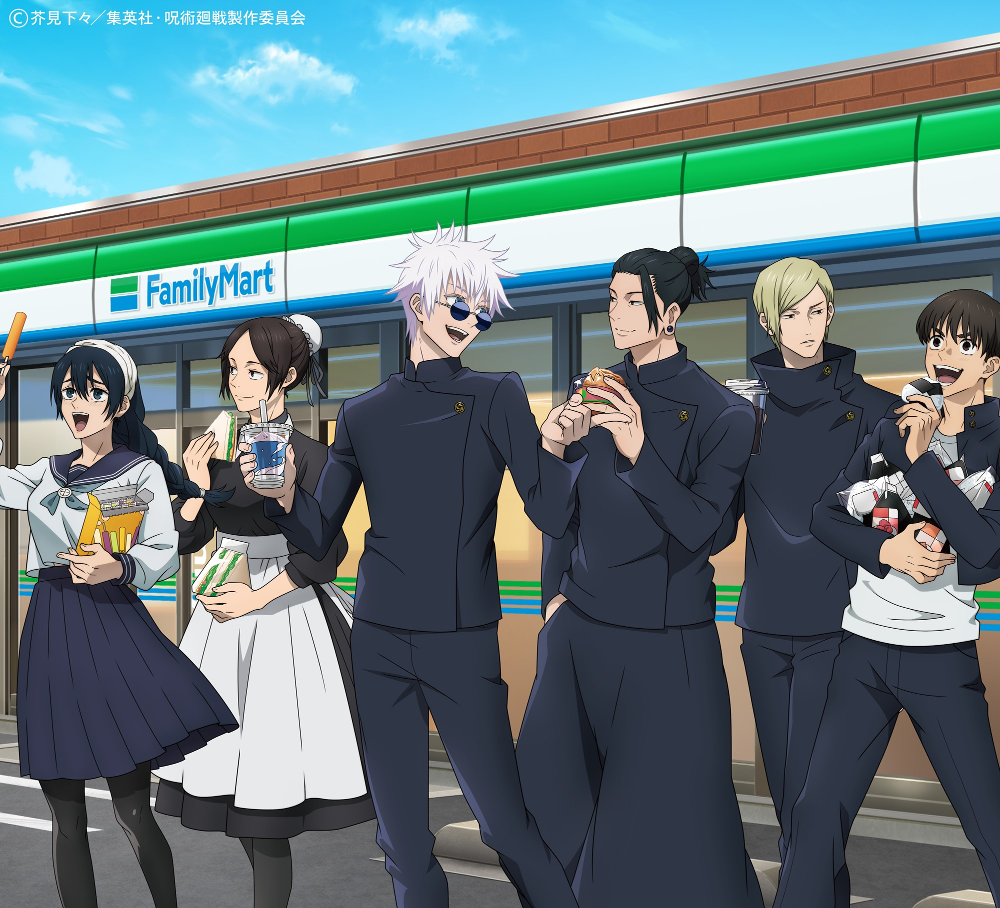

Certo dia eu encontrei um objeto amaldiçoado
Decido pegar o objeto e vejo que ele tem um selo
Vou embora mas ainda sinto o objeto me chamar
Ao retirar o selo do objeto, vejo que é o lendario dedo de Sukuna, quem o comer, pode conseguir um grande poder ou morrer

Vou embora
Pego o objeto e vejo que é o dedo de Sukuna
Fico pensativo
Meu poder aumenta, mas me sinto estranho
Vou até o objeto e após tirar seu selo, vejo que é o dedo do Sukuna
Passo mal, mas os médicos me examinam
Passo muito mal e desmaio

O lendário Sukuna reencarna em meu corpo e o torna seu, assim, minha alma se perde para sempre
Acordo dentro de uma escuridão e um feiticeiro está lá